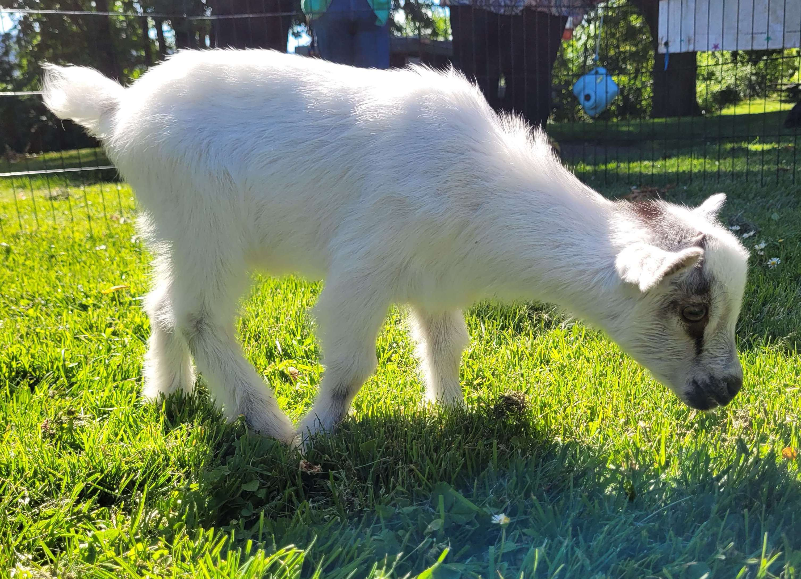
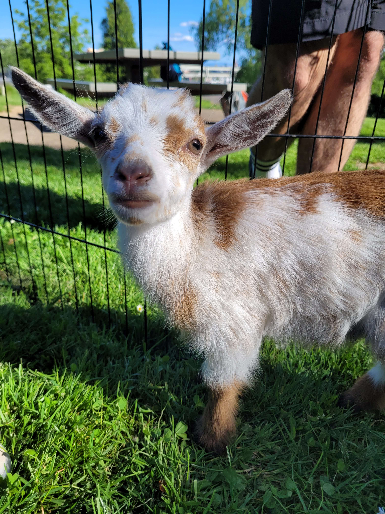
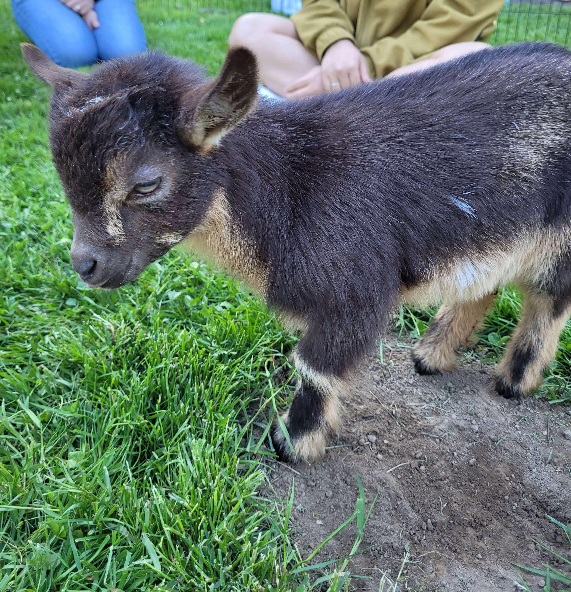
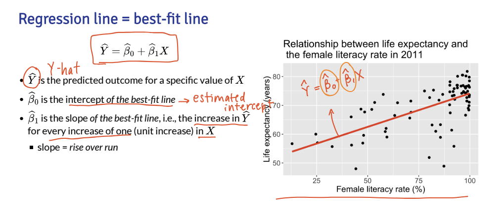

Lesson 17: Wrap-up and other regressions
Animals of the day




Today
- Let’s zoom out a little and see what types of regressions we can do
- You should have the main tools to perform these regressions
- Each has some nuances, but I’ll give you sources that help walk you through them
Types of regressions
| Dist’n of Y | Typical uses | Link name | Link function | Common name |
|---|---|---|---|---|
| Normal | Linear-response data | Identity | \(g(\mu)=\mu\) | Linear regression |
| Bernoulli / Binomial | outcome of single yes/no occurrence | Logit | \(g(\mu)=\text{logit}(\mu)\) | Logistic regression |
| Poisson | count of occurrences in fixed amount of time/space | Log | \(g(\mu)=\log(\mu)\) | Poisson regression |
| Bernoulli / Binomial | outcome of single yes/no occurrence | Log | \(g(\mu)=\log(\mu)\) | Log-binomial regression |
| Multinomial | outcome of single occurence with K > 2 options, nominal | Logit | \(g(\mu)=\text{logit}(\mu)\) | Multinomial logistic regression |
| Multinomial | outcome of single occurence with K > 2 options, ordinal | Logit | \(g(\mu)=\text{logit}(\mu)\) | Ordinal logistic regression |
Linear regression
- Outcome type: continuous
- Example outcomes:
- Height
- IAT score
- Heart rate
- Population model
\[ E(Y \mid X) = \mu = \beta_0 + \beta_1 X\]
- Interpretations
- The change in average \(Y\) for every 1 unit increase in \(X\)
Linear regression resources
- 512/612 class site!!
- Online textbook by Dr. Nahhas
Logistic regression
- Outcome type: binary, yes or no
- Example outcomes:
- Food insecurity
- Disease diagnosis for patient
- Fracture
- Population model
\[ \text{logit}(\mu) = \beta_0 + \beta_1 X\]
- Interpretations
- The log-odds ratio for every 1 unit increase in \(X\)
Logistic regression resources
Poisson Regression
- Outcome type: Counts or rates
- Example outcomes:
- Number of children in household
- Number of hospital admissions
- Rate of incidence for COVID in US counties
- Population model
\[ \log(\mu) = \beta_0 + \beta_1 X\]
- Interpretations
- The count (or rate) ratio for every 1 unit increase in \(X\)
Poisson Regression resources
YouTube video on R tutorial for Poisson Regression
- Dr. Fogerty is a professor in Political Science, so just beware they may not have formal statistical training
-
- Social scientist, so just beware they may not have formal statistical training
Log-binomial Regression
- Outcome type: binary, yes or no
- Example outcomes:
- Food insecurity
- Disease diagnosis for patient
- Fracture
- Population model
\[ \log(\mu) = \beta_0 + \beta_1 X\]
- Interpretations
- We have log of probability on the left
- So exponential of our coefficients will be risk ratio
Log-binomial Regression resources
Multinomial logistic regression
- Outcome type: multi-level categorical, no inherent order
- Example outcomes:
- Blood type
- US region (from WBNS)
- Primary site of lung cancer (upper lobe, lower lobe, overlapped, etc.)
- We have additional restriction that the multiple group probabilities sum to 1
Population models\[ \log \left(\dfrac{\mu_{\text{group } 2}}{\mu_{\text{group } 1}} \right) = \beta_0 + \beta_1 X\] \[ \log \left(\dfrac{\mu_{\text{group } 3}}{\mu_{\text{group } 1}} \right) = \beta_0 + \beta_1 X\]
Interpretations
- Basically fitting two binary logistic regressions at same time!
- First equation: how a one unit change in \(X\) changes the log-odds of going from group 1 to group 2
- Second equation: how a one unit change in \(X\) changes the log-odds of going from group 1 to group 3
Multinomial logistic regression resources
YouTube video on R tutorial for Poisson Regression
- Again, Dr. Fogerty is a professor in Political Science
Ordinal logistic regression
- Outcome type: multi-level categorical, with inherent order
- Example outcomes:
- Satisfaction level (likert scale)
- Pain level
- Stages of cancer
- When these variables are predictors, we are pretty lenient about treating them as continuous
- We must be VERY STRICT when they are outcomes
- They do not meet the assumptions we place on continuous outcomes in linear regression!!
- We have additional restriction that the multiple group probabilities sum to 1
- Population models , with levels \(k = 1, 2, 3, ..., K\)
\[ \log \left(\dfrac{P(Y \leq 1)}{P(Y > 1)} \right) = \beta_0 + \beta_1 X\] \[ \log \left(\dfrac{P(Y \leq k)}{P(Y > k)} \right) = \beta_0 + \beta_1 X\]
- Interpretations
- Basically fitting \(K\) binary logistic regressions at same time!
- First equation: how a one unit change in \(X\) changes the log-odds of going from group 1 to any other group
- Second equation: how a one unit change in \(X\) changes the log-odds of going from group 1 or 2 to group 3 or above
Ordinal logistic regression resources
Even more regressions…
| Dist’n of Y | Typical uses | Link name | Link function | Common name |
|---|---|---|---|---|
| Bernoulli / Binomial | outcome of single yes/no occurrence | Probit | \(g(\mu)=\Phi^{-1}(\mu)\) | Probit regression |
| Bernoulli / Binomial | outcome of single yes/no occurrence | Complementary log-log | \(g(\mu)=\log(-\log(1-\mu))\) | Complementary log-log regression |
| Multinomial | outcome of single occurence with K > 2 options, nominal | Probit | \(g(\mu)=\Phi^{-1}(\mu)\) | Multinomial probit regression |
| Multinomial | outcome of single occurence with K > 2 options, ordinal | Probit | \(g(\mu)=\Phi^{-1}(\mu)\) | Ordered probit regression |
More regression resources
General resources
Moment of appreciation for your growth
- Remember when we were learning simple linear regression…
- This was a slide from our second week together:

- Even if you don’t feel like you learned everything, you have learned a lot from the first time you saw the above slide